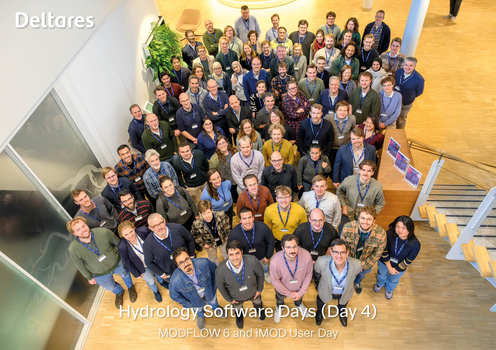
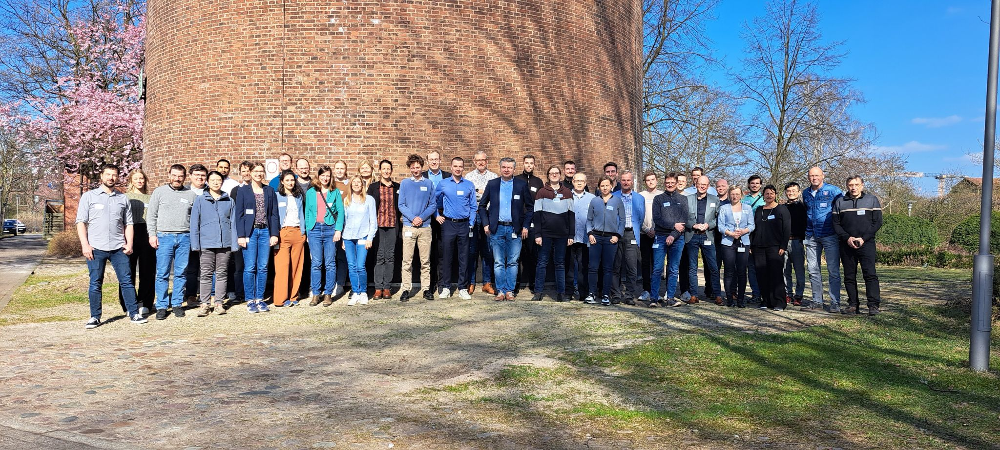
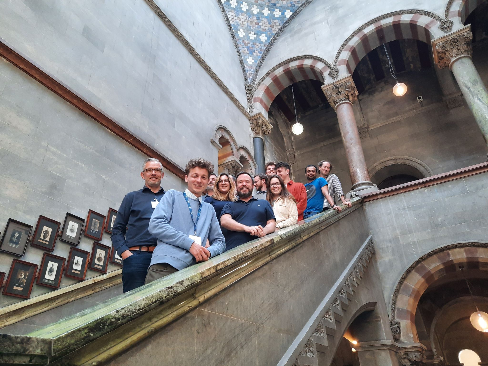

flowchart TB
subgraph 2006
A{iMOD 1.0}
X{{Start development}}
end
A --> B{iMOD 2.0}
subgraph 2014
B
Y{{Fortran code \n available as open source}}
end
B --> C{iMOD 3.0}
subgraph 2015
C
Z{{Executables freely \n available}}
end
C --> D{iMOD 4.0}
subgraph 2017
D
XX{{parallel Solver Pks}}
end
D --> E{iMOD 5.0}
subgraph 2019
E
XY{{iMOD Water Quality \n and MODFLOW6}}
end
E --> F{iMOD 5.2}
subgraph 2020
F
XZ{{BMI coupling \n Modflow6-MetaSWAP}}
end
F --> G{iMOD Suite}
F --> H{iMOD 5.3}
subgraph 2021
G
YX{{Tooling in Python, QGIS \n C++. Unstructured grids}}
end
subgraph 2021
H
end
H --> I{iMOD 5.5}
G --> J{iMOD Suite}
subgraph 2023
I
end
subgraph 2023
J
YY{{Model input validation, \n CPT plotting in QGIS, \n Backwards \n compatibility iMOD 5}}
end
About
Get involved
Questions and help
If you have questions on using iMOD Suite or want to report a bug, you can send an email to imod.support@deltares.nl.
Bugs, source code
Below is the list of repositories that contain the source code of the individual components. You can raise issues, or suggest changes, here.
History
Developments on iMOD started in 2006, with the aim to make groundwater modelling with MODFLOW easier. iMOD developed into a full fletched GUI, which could be used to build and analyse groundwater models from start to finish. Focus of the software always has been on large groundwater models, for which the software was so successful that most regional groundwater models owned by water boards in Netherlands, plus the Dutch National model (LHM), run on iMOD. In 2014, in Deltares’ move to make their software open source, the Fortran code of iMOD was shared and in 2015 the compiled executables became freely available. In many international projects (for example in India, New Orleans, Colombia, Germany, and Switzerland) this was one of the reasons to adopt iMOD as the modelling software. iMOD’s capabilities of simulating large groundwater models were pushed further in 2017 when iMOD and its custom computational kernels iMODFLOW and iMOD-WQ, could be run in parallel. Developments on the GUI continued up to 2020, when it became apparent that the approach up to that point had a few drawbacks:
With the release of Modflow 6, computations on unstructured grids were possible. This created a demand for supporting all types of unstructured grids. iMOD, however, could not support these grids (except multi-model structured subgrids).
It was difficult to connect iMOD to the ever changing software and data science ecosystem, because of the use of Fortran and iMOD’s custom data formats. For example, Python has a larger ecosystem, allowing users to easily incorporate all kinds of packages into their workflows.
Therefore, in 2021, the iMOD Suite was released. This suite consists of a Python package, a QGIS plugin, and a 3D viewer. It therefore supports reproducible workflows for unstructured groundwater models and relies more on standard filetypes such as NetCDF, UGRID, and shapefiles.
The classic iMOD GUI and its batch functionality is consolidated under the name iMOD 5, and will be maintained for the coming years. During this transition period it is easy to use iMOD 5 in combination with iMOD Suite. New developments will land in iMOD Suite.
Trainings
Delft Software Days
Twice a year, there is an iMOD day, where users can hear the latest iMOD developments and get training in the latest features. These are a great opportunity to get to know fellow users and the developers. Trainings will be announced on the Delft Software Days website and via the iMOD mailing list, so keep an eye out on those.
In 2021, the Delft Software Days were not held in person but recorded as webinars, which can be viewed online. Note that due to privacy settings, you might need follow the link below the video to view it on the Deltares Vimeo page.
iMOD User Day 2021 from Deltares on Vimeo.
Past trainings iMOD Suite
2025-11: Deltares Campus, Delft

2025-03: Hamburg Wasser, Hamburg

2023-02: National University of Singapore, Singapore

2022-11: Deltares Campus, Delft

2022-06: Trinity college, Dublin

Publications using iMOD Suite
Delsman, Joost R., Tobias Mulder, Betsy Romero Verastegui, Huite Bootsma, Pieter Zitman, Sebastian Huizer, and Gualbert H. P. Oude Essink. 2023. “Reproducible Construction of a High-Resolution National Variable-Density Groundwater Salinity Model for the Netherlands.” Environmental Modelling & Software, 105683. https://doi.org/https://doi.org/10.1016/j.envsoft.2023.105683.
Engelen, J. van, G H P Oude Essink, and M F P Bierkens. 2022. “Sustainability of fresh groundwater resources in fifteen major deltas around the world.” Environmental Research Letters 17 (12): 125001. https://doi.org/10.1088/1748-9326/aca16c.
Engelen, Joeri van, Marc F. P. Bierkens, Joost R. Delsman, and Gualbert H. P. Oude Essink. 2020. “Factors Determining the Natural Fresh-Salt Groundwater Distribution in Deltas.” Water Resources Research 57 (1). https://doi.org/10.1029/2020WR027290.
Engelen, Joeri van, Jarno Verkaik, Jude King, Eman R. Nofal, Marc F. P. Bierkens, and Gualbert H. P. Oude Essink. 2019. “A three-dimensional palaeohydrogeological reconstruction of the groundwater salinity distribution in the Nile Delta Aquifer.” Hydrology and Earth System Sciences 23: 5175–98. https://doi.org/10.5194/hess-2019-151.
Farías, Ignacio, Gualbert H. P. Oude Essink, Perry G. B. de Louw, and Marc F. P. Bierkens. 2024. “Effects of Grid Resolution on Regional Modelled Groundwater Salinity and Salt Fluxes to Surface Water.” Journal of Hydrology 643 (November). https://doi.org/10.1016/j.jhydrol.2024.131915.
King, Jude, Tobias Mulder, Gualbert Oude Essink, and Marc F. P. Bierkens. 2021. “Joint estimation of groundwater salinity and hydrogeological parameters using variable-density groundwater flow, salt transport modelling and airborne electromagnetic surveys.” Advances in Water Resources 160 (December): 104118. https://doi.org/10.1016/j.advwatres.2021.104118.
Seibert, Stephan L., Janek Greskowiak, Friederike Bungenstock, Holger Freund, Martina Karle, Rena Meyer, Gualbert H. P. Oude Essink, Joeri van Engelen, and Gudrun Massmann. 2023. “Paleo-Hydrogeological Modeling to Understand Present-Day Groundwater Salinities in a Low-Lying Coastal Groundwater System (Northwestern Germany).” Water Resources Research 59 (4): 1–24. https://doi.org/https://doi.org/10.1029/2022WR033151.
Seibert, Stephan L., Janek Greskowiak, Gualbert H. P. Oude Essink, and Gudrun Massmann. 2024. “Understanding Climate Change and Anthropogenic Impacts on the Salinization of Low-Lying Coastal Groundwater Systems.” Earth’s Future 12 (August). https://doi.org/10.1029/2024EF004737.
Thissen, Lena, Janek Greskowiak, and Gudrun Massmann. 2025. “The Potential Effect of Climate-Change Induced Consecutive Dry or Wet Years on the Freshwater Lens of a Barrier Island (Langeoog, Germany).” Journal of Hydrology: Regional Studies 61: 102676. https://doi.org/https://doi.org/10.1016/j.ejrh.2025.102676.
Thomas, Ariel T., Aaron Micallef, Shuangmin Duan, and Zhihui Zou. 2023. “Characteristics and Controls of an Offshore Freshened Groundwater System in the Shengsi Region, East China Sea.” Frontiers in Earth Science 11. https://doi.org/10.3389/feart.2023.1198215.